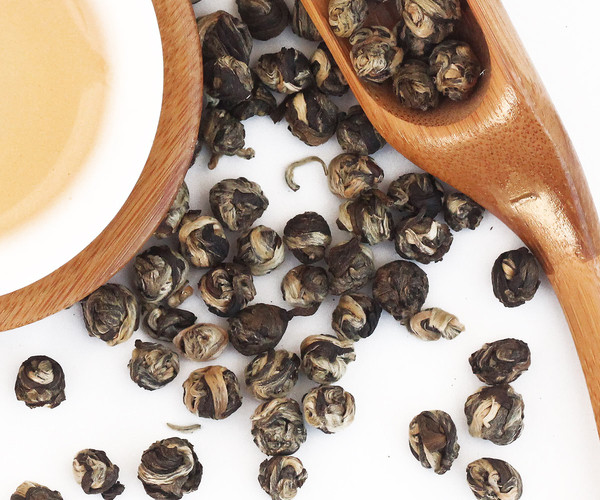
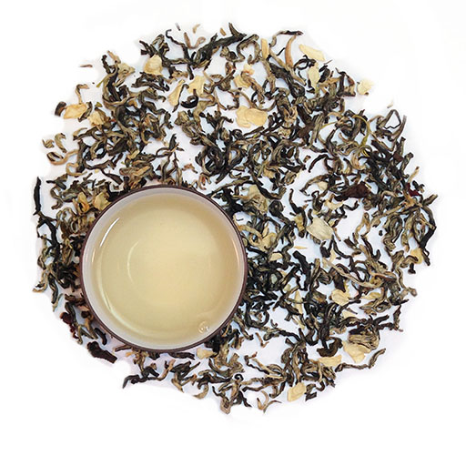
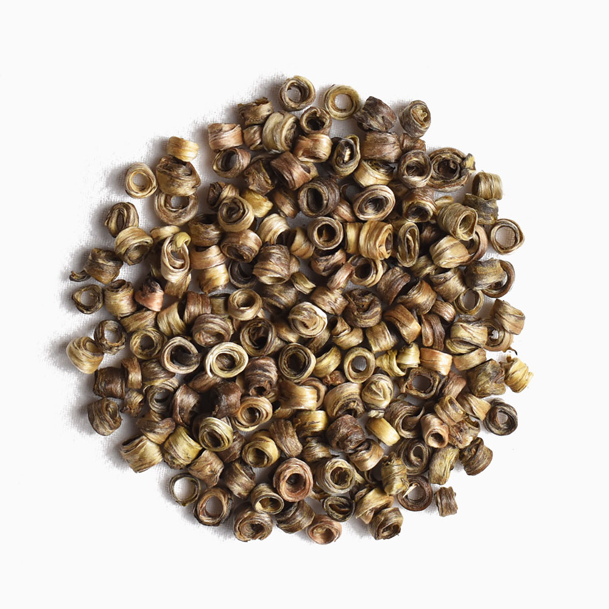
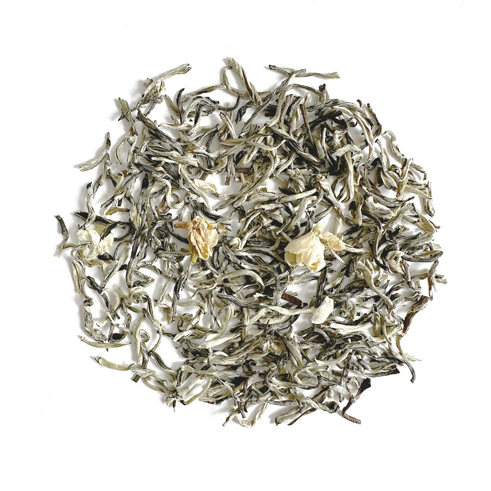

Tea Origin: Fujian
Jasmine Origin: Heng County, Guangxi
Tea Leaves: One bud, few leaves
Properties: Smooth and soft. Prominent jasmine fragrance without bitterness, even if brewed for a long time.

Tea Origin: Mengding, Sichuan
Jasmine Origin: Yuxi, Yunnan
Tea Leaves: One bud and one leaf
Properties: Jasmine flower dances while brewing, tastes sweet with a rich jasmine aroma.

Tea Origin: Simao, Yunnan
Jasmine Origin: Heng County, Guangxi
Tea Leaves: Single tea buds
Properties: Strong jasmine taste, ring-shaped tea buds.

Tea Origin: Simao, Yunnan
Jasmine Origin: Heng County, Guangxi
Tea Leaves: Bud with two or three leaves
Properties: Strong jasmine taste, will get bitter if brewed for a long time.